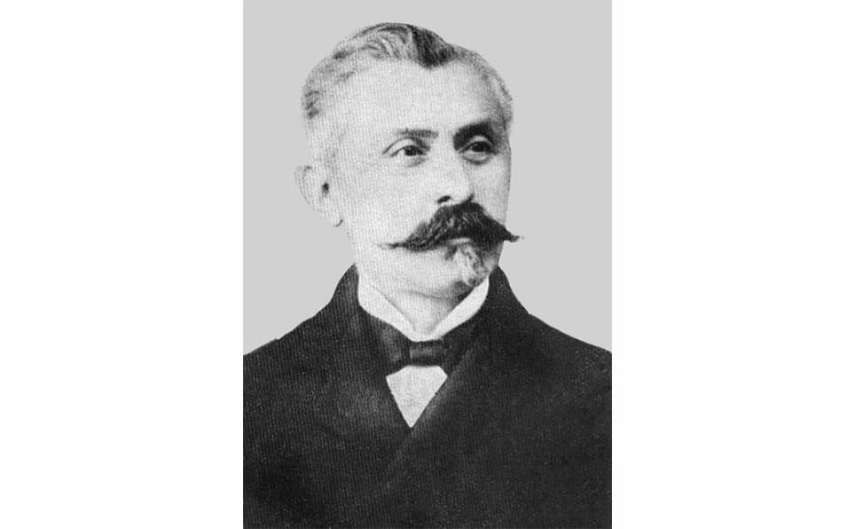

Motto: „Ca și soarele, el [Marele Arhitect, Lucifer, Satana] își răspîndește energia spirituală pretutindeni. Și – după cum aici, pe pămînt, există multe locuri întunecate, în care lumina nu poate pătrunde – așa sînt și nenumărate suflete incapabile să primească și să asimileze această energie spirituală divină. Cu ajutorul oglinzilor, se poate aduce lumina solară în fundul unei grote; ca și ele, omul poate să îndrepte lumina spiritului asupra acestor suflete întunecate și – cine știe? – s-o reflecte într-un fel care să le ajute s-o primească și s-o folosească.”
Scriam în numărul trecut al revistei noastre că scopul de căpătîi al învățămîntului „general, gratuit și obligatoriu” a fost, este și va fi descreștinarea întregii omeniri botezate (căci cei care nu au primit, prin Sfîntul Botez, darul înțelegerii Scripturii, adică al cuvîntului Adevărului, nici nu au cum să mai fie smintiți mai mult decît sînt). Și îl pomeneam pe acel Cuza Vodă; care, să ne amintim, „a despărțit învățămîntul de Biserică și a introdus obligativitatea și gratuitatea primelor clase”, după cum citeam în Istoria de a 4-a. Cuza a hotărît acestea, dar cine a săvîrșit cu lucrul zisele „reforme ale școlii”, care pe atunci era biserica satului? Urmașii lui, ceata liberală în cap cu Brătianu ăl bătrîn, care au dus și mai departe războiul de ateizare pedagogică a Românilor (ce erau în număr covîrșitor țărani, de vreme ce orașul nu a fost la noi întotdeauna cloaca tuturor alogenilor fugăriți din țările Europei), potrivit poruncilor stăpînilor de la Paris. În acest nobil scop, au pregătit un comisar – european, dar și al poporului - croit pe măsura vremurilor noi. Acesta a fost Spiru Haret (1851-1912). (Zic „al poporului”, fiindcă era unul dintre susținătorii „poporanismului”, o sminteală evreiască ce idealiza țăranul, pe care îl ura și îl disprețuia din toată inima, de altfel - pregătindu-l pentru revoluțiile viitoare.) Precum citim în același manual: „Bazele învățămîntului modern sînt puse de Spiru Haret, ministru [de două ori] al Instrucțiunii Publice [și al Cultelor!]” (Istoria Românilor, manual pentru clasa a 4-a, Sigma, 1997).
Să nu credem că drăceasca lucrare a fost lesne de înfăptuit, și aceasta pentru mai multe pricini. Mai întîi, să ne gîndim că minciuna pedagogică umanistă se lovea de firescul bun simț al copiilor și al părinților Români și țărani din acea vreme. Încît nu le puteai spune în față, de pildă, că omul se trage din maimuță, că pămîntul se învîrtește, că Neil Armstrong a pășit pe Lună, că J. F. Kennedy a fost împușcat de un oarecare agent K. G. B. sau că World Trade Center a fost nimicit de Arabi. Fiind păziți de harul dumnezeiesc pentru viața lor creștinească (atît cît era creștinească), și deci sănătoși la cap, toți – și mici, și mari – te-ar fi batjocorit cu milă, văzînd că ești nătîng rău. Iar dacă ai fi stăruit cu dinadinsul, chiar i-ai fi supărat, precum s-a și întîmplat. Căci, așa simplă cum era în gîndire (și tocmai de aceea), „prostimea” românească vedea prea-bine că „luminătorii poporului” sînt stricători de minte și de bune năravuri, iar în timpul liber chiar ațîțători la răzmeriță pe față. Precum însuși acel comisar-șef al Cultelor și Instrucțiunii scria în raportul trimis așa-zisului1 rege Carol I că:

„În adevăr, trebuie să se știe că pe atunci învățătorul era încă a priori considerat ca un răzvrătitor, și orice mișcare făcea el se interpreta în rău. De aceea, mulți învățători s-au văzut atunci acuzați de agitațiuni subversive și expuși la tot felul de neajunsuri. Cînd cu tulburările țărănești din 1898 în județele Teleorman, Olt, Romanați și Dolj, vreo cîțiva învățători au fost denunțați ca provocatori ai dezordinilor și urmăriți” (Raport adresat M. S. Regelui asupra activității ministerului instrucțiunii publice și al cultelor de Spiru C. Haret, ministru, București, Institutul de arte grafice „Carol Gobl”, 1903).
Dar cea mai însemnată pricină pentru care învățămîntul umanist (adică satanic, adică francmasonic) nu a sporit precum ar fi vrut apostolii săi a fost autoritatea preoților ortodocși; care, în ciuda tuturor „reformelor” lui Cuza și a silniciei polițienești a Statului, erau încă ascultați în parohiile lor. Pentru aceea, numitul Haret Spiru (ca ministru al creștinismului românesc, adică „patriarh” civil și antihrist) și vechilii săi i-au adus întru blestemata lor împreună-lucrare pe ierarhii Bisericii, bine frăgeziți de loviturile tîlhărești ale lui Cuza și de propria lor alunecare în umanism și masonizare. Și așa, încet-încet, ortodoxia tot mai umanistă s-a înjugat cu ateismul revoluționar, în nebuneasca încercare de a împreuna adevărul cu minciuna, lumina cu întunericul, pe Hristos cu Veliar (Satana). (Ceea ce firește că nu se poate, dar scopul, adică smintirea „poporului aflat în bezna neștiinței”, s-a înfăptuit oricum.) Însuși „roșul” („roșii” erau numiți pe atunci liberalii, fiind cei mai turbații întru „progres”) așadar însuși „roșul” Haret Spiru (Grecotei, Machidon grecizat?) îi scrie Neamțului Carol:
„Încă una din preocupările noastre este de a face ca cercurile culturale să întrunească la un loc activitatea, sau cel puțin buna-voință […] a tuturor acelora care, prin situațiunea lor, sînt în măsură de a avea o influență oarecare asupra sătenilor. Printre aceștia, în prima linie vine preotul, a cărui vorbă, oricine știe, este mai mult ascultată decît a învățătorului. De aceea, lucrarea de înălțare a păturii țărănești va fi mult înlesnită dacă preotul va colabora alături cu învățătorul.
Pentru acest motiv, am solicitat de la P. S. Mitropoliți și Episcopi ca să ne ajute în întreprinderea noastră. Prin adresa noastră din 20 februarie, 1902, am rugat să ia măsuri pentru ca preoții să ia parte împreună cu învățătorii la cercurile culturale, la instituirea băncilor populare și altele. De altă parte, am luat dispozițiunea ca la întrunirile cercurilor culturale să fie invitați și preoții și, de cîte ori vor lua parte, să aibă ei președința de onoare.
Acest apel al nostru a fost ascultat de cei mai mulți din P. S. Chiriarhi, și pretutindeni unde au fost ordine date preoții s-au asociat la activitatea învățătorilor, și succesul a fost îndoit. În special în eparhia Dunării de Jos, P. S. S. Episcopul a dat însuși ordine și a organizat conferințe preoțești la care sînt chemați și revizorii școlari, cu scop de a stabili legătura între activitatea lor și activitatea cercurilor de învățători. În schimb, în județele unde preoții s-au ținut de o parte, foloasele activității învățătorilor sînt mai puțin simțite.
Sperăm că în cele din urmă vom triumfa de acest antagonism neînțeles [adică între Hristos și Satana] și pe unde a mai rămas, căci preoții trebuie să înțeleagă că principala lor chemare este de a lucra pentru binele poporului [ca și comisari cu barbă și uniformă lungă]” (Raport…).
Pînă la urmă, ministrul și bandele sale de „învățători” au biruit, pentru că aveau toată puterea, într-o țară ajunsă colonie de exploatare și laborator francmasonic. Mult a fost pînă cînd țăranii au prins gustul umanismului - adică al slavei deșarte, al pișicherlîcului și al „culturii”, al traiului „civilizat” propovăduit în școală și la „conferințele” și „cercurile științifice” - că apoi s-au îmbulzit singuri către școală, precum sînt îndemnați copiii să citească în urîtul roman apologetic Moromeții, de Marin Preda (care „se face” încă „dintr-a treia”).
Haret a fost omul potrivit la locul potrivit, de o rasă neîntîlnită la miniștrii lui Cuza. Era matematician și pedagog, adică „pytagoreu”, și nu prost, cel dintîi „Român” (!?) doctor în matematici. Mai mult, să băgăm de seamă că era nepot duhovnicesc al lui Newton și Descartes, în tinerețe ocupîndu-și mintea cu probleme de mecanică cerească, ale cărei „legi” le-a întins – așa cum făcuseră și maeștri „iluminismului” - asupra sociologiei, scriind o carte intitulată chiar Mecanica socială (1910).
Dar să încheiem aici, cu un frumos cuvînt al poetului și matematicianului Ion Barbu (Dan Barbilian):
„Figura liberală cea mai austeră, reformatorul Spiru Haret nu ne impune. Despre valoarea lui științifică [era și el doctor în matematici] nu e cazul să vorbesc aici. Prin opera lui revoluționară îl socotim însă cel mai nefast om al trecutului nostru apropiat. Cu un fanatism masonic necunoscut pînă la el, s-a aplicat să formeze un grup de învățători quasi-marxiști, admirabili agenți electorali, meritorie anticipație asupra învățătorilor Frontului Popular din Franța.”
1 Carol a fost păpușa fără voință a bătrînului Brătianu și a sinagogii, treaba lui fiind doar aceea de a semna decretele ce i se puneau în față, toate fiind gîndite spre ruinarea și nimicirea neamului românesc.